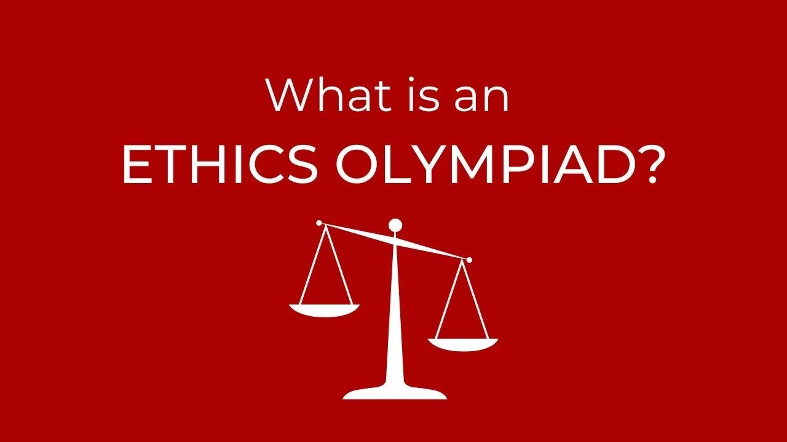
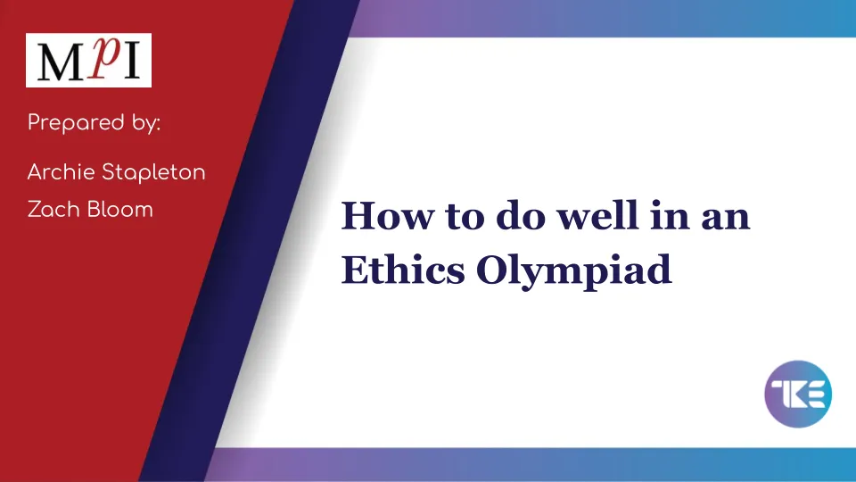
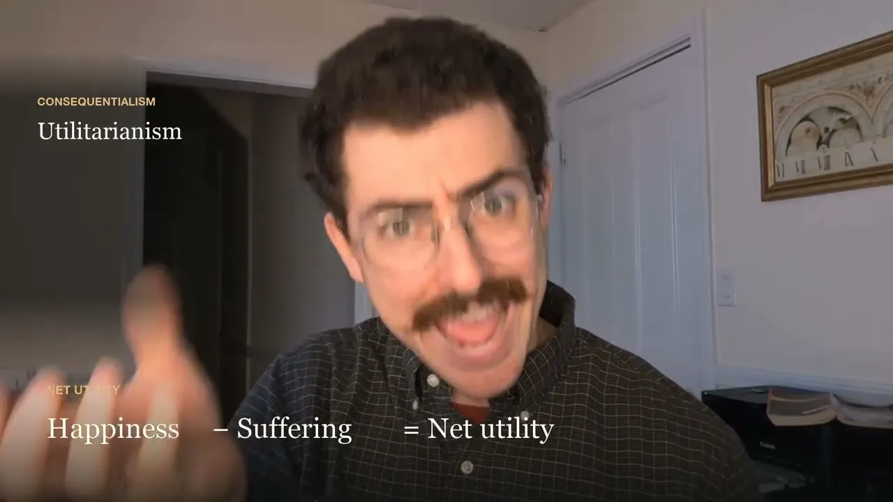

Ethics Competition Resources
Resources
Everything you need to prepare for an ethics competition or run a class: the competitor handbook, a free lecture, a ready-to-teach course and the official match timer.
Where would you like to start?

New to ethics competitions?
Learn how a round works, how judges score, and what each speech is for.
Read the handbook
Teaching a class or club?
A free 10-class course with lesson plans, slides and homework, ready to teach.
See the course
Ready to go deeper?
Start with a 9-minute lecture on the three big ethical theories, then the reading library.
Watch the lecture Official Ethics Olympiad licensee
Official Ethics Olympiad licenseeStart with the handbook
Competitor Handbook
How a heat runs, how judges score, what each speech is for, and what tends to go wrong. Read this before anything else on the page.
Welcome
A short orientation before the rest of the handbook gets into the details.
This handbook covers everything you need to compete well at any Modus Ponens Institute (MPI) or TKEthics (TKE) ethics event: how a heat runs, how judges score, what each speech is for, and what tends to go wrong. Read it carefully and you'll know what you're walking into.
One thing about results before anything else. There are no winners and losers in an individual heat. Both teams can score identically, and judges aren't asked to pick a victor. Your final ranking comes from your average score across four heats, so a single rough heat is rarely fatal, and a single great heat is rarely enough by itself. Consistency is what wins tournaments.
The MPI Events Landscape
Two competition tracks, both using the same heat format and the same score sheet. They differ in who can compete and what kinds of cases you see.
Ethics Olympiad (Pan American, European, Middle School)
The Ethics Olympiad runs three regional qualifying events that all feed into the Ethics Olympiad International Final, an online tournament hosted out of Australia where over 800 schools competed in 2025.
- Pan American Ethics Olympiad. School-based teams from the Americas.
- European Ethics Olympiad. School-based teams from the UK, Europe, and Africa.
- Middle School Ethics Olympiad. Younger students, also school-based.
To qualify for an Olympiad event, a team must represent a specific school, and every student on the team must be enrolled there. This is what makes Olympiad teams eligible for the regional event and the International Final.
TKEthics Invitationals (Spring, Fall, Novice)
The TKEthics Invitationals run twice a year and qualify teams for the TKEthics International Grand Final in summer. TKE cases are tech-focused: AI, biotech, data, platforms, and the ethics of emerging technologies.
TKE events are open to any team configuration. A team can come from a single school, several schools, a debate academy, a homeschool co-op, a community group, or any other arrangement that gets the right kids in the room.
The TKEthics Novice Invitational
Alongside the Spring and Fall Invitationals, MPI runs a TKEthics Novice Invitational. It uses the same format and scoring as every other MPI event but is reserved for newcomers. The aim is a less intimidating first experience for teams who are still getting their bearings, against opponents at the same stage.
To qualify for the Novice Invitational, a team needs to be in one of two situations:
- Has never competed in an ethics event before, or
- Has competed once but never medaled.
The format itself is identical to every other MPI event, so any preparation that travels to the Novice Invitational will travel to the larger competitions afterward.
At a glance
| Feature | Ethics Olympiad | TKE Spring & Fall | TKE Novice |
|---|---|---|---|
| Eligibility | Teams must represent a specific school in order to qualify. | Any team configuration (school, mixed-school, academy, etc.). | Any team configuration. Open only to teams that have never competed, or have competed once without medaling. |
| Case focus | Broad ethical issues across many domains. | Technology-focused (AI, biotech, data, platforms). | Technology-focused. |
| Qualifies for | Ethics Olympiad International Final (online, hosted from Australia). | TKEthics International Grand Final (summer). | Standalone event. |
| Format | Online. | Online. | Online. |
How a Heat Runs
The format every MPI event uses. Two rounds, same structure, with the roles flipped.
A short framing point first. These events aren't debates. Both teams are working together to think carefully about a hard ethical question, and judges are watching to see which team reasons more clearly and more honestly about it. Teams that try to score points by attacking the other side tend to do worse than teams that engage seriously with the strongest version of the other side's view. Keep that in your head as you read what follows.
A team is three to five students. The team divides speaking roles however it wants. No role is fixed to any one person, and the same speaker can take parts across the heat or hand off mid-round.
Every heat is built from two rounds. In Round 1, Team A presents on the first case and Team B comments on it. In Round 2, the roles flip: Team B presents on a second case and Team A comments. By the end of a heat, both teams have delivered every type of speech.
The opening coin toss
Before the heat begins, the moderator runs a coin toss. The winner of the toss chooses to be Team A (presents first) or Team B (comments first). You don't see which cases will be in the heat when you're choosing.
Round 1: timing
The moderator distributes the case study and reads the question aloud. Once the question is read, Team A's conference clock starts. The full sequence:
| Step | What happens | Who | Time |
|---|---|---|---|
| 1 | Moderator distributes the case and reads the question. | Moderator | — |
| 2 | Team A confers privately to plan its presentation. | Team A | 3 min |
| 3 | Team A delivers its presentation. | Team A | 5 min |
| 4 | Team B confers privately to plan its commentary. | Team B | 1 min |
| 5 | Team B delivers its commentary on Team A's presentation. | Team B | 3 min |
| 6 | Team A confers privately to plan its response. | Team A | 1 min |
| 7 | Team A responds to Team B's commentary. | Team A | 3 min |
| 8 | Judges question Team A in a back-and-forth conversation. | Judges & Team A | 7 min |
Round 2: roles reversed
Round 2 is identical to Round 1, except now Team B is the presenting team and Team A is the commenting team. A new case is distributed and the sequence above repeats. At the end of the heat, judges add the respectful-dialogue score (which is given once per heat, not once per round) and total each team's points.
Conferences
Conference time is your team's main planning resource during the heat. The 3-minute conference before your presentation is when you settle on your position, pick whatever framework or principle you'll lean on, and divide up who says what. The 1-minute conferences before commentary and response are tight; they work best when the team focuses on the two or three most important things to address rather than trying to cover everything.
During a conference, your team should ideally be in one room together with microphones muted. If team members are in different physical locations, set up a separate channel ahead of time (a side video call or chat) and only use it during your allotted conference times. The other team and any audience members must remain silent during your conference. Written notes between teammates are fine throughout the heat.
Materials, notes, and AI
The policy in three lines:
- Notes and prepared materials are permitted.
- The use of AI is not permitted, and judges will decrease the scores of teams they believe are using AI.
- We will not enter into correspondence about this, and we do not allow teams to accuse other teams of using AI.
A bit of context on why the policy is what it is. Heats are scored on real-time reasoning under pressure, and using AI mid-round defeats the thing being assessed. We can't perfectly enforce this online, so judges are instructed to factor any sign of script-reading or AI-generated text into a team's scores. If it sounds like you're reading something, you'll likely be marked down, regardless of where the text came from. Judgment calls about whether a team is using AI rest with the judges, which is why teams aren't permitted to raise it about each other.
The most useful preparation isn't a polished script anyway. Cases are released ahead of the tournament so your team can prepare, but you won't see the moderator's specific question until the heat begins, and that question will demand a more focused angle than any pre-written answer can anticipate. The teams that tend to do well work on three things in the lead-up:
- A clear understanding of the core ethical dilemma in each case.
- A defensible position on that dilemma, with reasoning the team genuinely owns.
- The ability to retune that reasoning, in your conference, to the actual question the moderator asks.
You're responsible for being able to explain and defend your ideas under judges' questioning. Over-reliance on prepared text tends to leave teams unable to do that when pressed.
The Score Sheet
Each team scores out of 60 per heat. Here's how those points are distributed.
Points are spread across four scored speeches per case, plus a single respectful-dialogue score at the end of the heat. Because each team presents once and comments once per heat, the totals balance: both teams have an equal opportunity to score every available point.
Per-team scoring breakdown (out of 60)
| Category | Points | When you earn it |
|---|---|---|
| Presentation (the case you present) | 15 | When you are the presenting team |
| Commentary (on the other team's case) | 10 | When you are the commenting team |
| Response to commentary | 15 | When you are the presenting team |
| Response to judges' questions | 15 | When you are the presenting team |
| Respectful dialogue | 5 | Once per heat, based on overall conduct |
| TOTAL | 60 |
How the presentation's 15 points break down
The 15-point presentation score is built from three sub-criteria, each worth 5 points. Judges score them independently and add them together.
- A. Clear and systematic (5 pts). Was the presentation clearly organized, and did it systematically address the moderator's question? A 5 means an exceptionally clear presentation that addresses the key dimensions of the question. A 1 means an incoherent presentation.
- B. Central moral dimensions (5 pts). Did the team correctly identify the central moral dimensions of the case and engage them with depth? A 5 means the team named those dimensions precisely and worked through them carefully. A 1 means the team misidentified them.
- C. Awareness of opposing viewpoints (5 pts). This is the steel-man criterion. Did the presentation show real awareness of the views someone who disagrees with the team would hold? A 5 means full and careful attention to the strongest opposing views. A 1 means minimal awareness of any other viewpoint.
How the other categories are scored
Commentary, the two response scores, and respectful dialogue are each scored holistically against a single rubric, with bands described in the official judging criteria. The headline question for each:
- Commentary (10 pts). How directly and effectively did the team engage the presenting team's argument?
- Response to commentary (15 pts). How thoughtfully and completely did the team respond to the commenting team's points?
- Response to judges' questions (15 pts). How thoughtfully did the team identify and engage the most pressing points raised by the judges?
- Respectful dialogue (5 pts). Did the team treat this as a productive, collaborative discussion rather than a combative debate?
The full official score sheet is available separately for reference. This handbook focuses on what judges are actually looking for in each category.
How to Succeed in Each Speech
Each scored element has a specific job, and judges are looking for specific things in each. Misreading the role you're in is one of the most common reasons for low scores.
1. The Presentation (15 points)
Your presentation is the foundation of the whole heat. The commentary, your response, and the judges' questions all build on how solid your presentation is. A muddled or evasive presentation tends to drag scores down throughout the rest of the round. A sharp, well-grounded presentation gives your team something to stand on under pressure.
Open by thanking the other team and the judges. Do this for every speech, including this one. It sets a collaborative tone and protects your respectful-dialogue score.
A strong presentation does five things
- Answers the question. State your position on the moderator's specific question early and clearly: "We believe the answer is X." The question is narrower than the case as a whole. Your job is to address that narrower question directly.
- Grounds the reasoning. If your argument leans on a particular ethical framework (utilitarianism, Kantian deontology, virtue ethics, contractualism, care ethics, or any other), name it and explain how you're using it. You don't have to invoke a formal theory at all; a clear principled argument grounded in shared moral intuitions can score just as well. What matters is that judges can see what is doing the work in your reasoning.
- Builds the argument. Walk the judges through how your reasoning, applied to this case, gets you to your conclusion. The connection between premises and conclusion should feel like a clear line, not a decorative gesture.
- Steel-mans the strongest objection. Present the most serious counter-argument that a smart, fair-minded person who disagrees with you would actually make. Picture the version they'd offer if they were sitting in your chair. This is what criterion C is testing, and it's where many teams lose points by reaching for an objection that's easy to knock down.
- Discharges the objection. Show how your view rebuts, accommodates, or is updated by it. "We think the objector is right that X, but our view still holds because Y" is generally stronger than ignoring the objection or pretending it has no force.
Common pitfalls
- Multiple frameworks, unclear commitment. Listing several frameworks and gesturing at all of them, or hedging on what your team's actual position is, leaves judges without a clear thread to follow. Pick one approach and one position. Let everything else hang from that.
- A weak counter-argument. If your steel-man is a flimsy version of what an opponent would say, judges notice immediately. The point of the steel-man is to show that your view survives the strongest objection, not the weakest.
- Engaging the case rather than the question. Teams sometimes treat the presentation as a general discussion of the case study, when the score sheet rewards systematic engagement with the moderator's specific question. Use the case as the reference material the question arises from. Build the presentation around the question itself.
2. The Commentary (10 points)
This is one of the more misunderstood roles in the heat. Commentary is not a second presentation. You are not being asked to give your team's view on the case. You are being asked to engage critically with what the presenting team just said. As with every speech, begin by thanking the other team and the judges. That signals you're entering the conversation as a collaborator rather than an opponent.
What strong commentary does
Pick two to four substantive points of engagement with what the presenting team said. Each point should be deep enough that the presenting team can meaningfully respond to it. Productive forms of engagement include:
- A counter-argument to one of their key claims ("You argued X, but X faces this serious problem...").
- A counter-example that puts pressure on their framework ("Your principle yields the wrong answer in case Z").
- A challenge to their steel-man. Was it actually the strongest objection, or did they pick a softer version?
- A recommendation of an alternative framework that would handle the case more cleanly.
- A request for clarification on a load-bearing piece of their reasoning that wasn't fully explained.
What weak commentary does
- Re-presents the case from your team's perspective. This is the single most common mistake. If your commentary could have been delivered without hearing the other team's presentation, it isn't really commentary on what they said.
- Rapid-fires eight or ten quick points. The presenting team only has three minutes to respond. A long list of small points leaves them no room to engage any of them seriously. Depth tends to score better than breadth in this role.
- Asks a string of questions without making any claims. Per the official rubric, "merely asking a series of questions" sits in the weak band. Pointed questions that pressure-test specific claims are useful, but the body of your commentary should be substantive engagement.
- Personal attacks or dismissive tone. These hurt both your commentary score and your respectful-dialogue score.
3. The Response to Commentary (15 points)
Your job is to engage each significant point in the commentary meaningfully and in some depth. Treat the commenting team as collaborators who may have shown you something you missed, rather than as opponents to defeat. Open by thanking the other team and the judges.
What scores well
- Address each substantive point. If they raised three real points, name and engage all three. Skipping a point reads as evasion or inattention. (You don't need to spend equal time on every point; depth of engagement should match the depth of what they said.)
- Prefer discovery to stubbornness. If a point genuinely lands, and the commenting team has shown you something you hadn't fully considered, acknowledging it openly tends to score better than pretending nothing happened. "That's a fair pressure on our framework. Here's how we'd refine our position to handle it..." is often a stronger move than digging in.
- Distinguish points you can rebut from points you need to accommodate. Some objections call for a counter-argument. Others call for a small concession plus a reaffirmation of your core view. Doing both kinds of moves in the same response shows judges you can think on your feet.
- Stay anchored. Your responses should still flow from the reasoning you laid out in the presentation, not from new ad-hoc moves improvised on the spot.
Common pitfalls
- Repeating your original presentation instead of engaging the commentary.
- Conceding everything in an attempt to look gracious. Intellectual humility doesn't mean abandoning your position. It means refining it under pressure.
- Stubbornly defending a point the commentary has clearly broken. Judges can usually tell when this is happening, and graceful concession scores better than continued defense.
4. The Response to Judges' Questions (15 points)
This is the longest single phase of a round (seven minutes), and it is more like a back-and-forth conversation than a series of independent answers. Judges will press you on the philosophical and logical merits of your position. They are testing whether your presentation can stand up to genuine scrutiny. Open by thanking the other team and the judges before you take the first question.
What judges are looking for
- Considered, adaptive answers. Take each question seriously, and don't reach for a memorized line. If you need a beat to think before answering, take it.
- Intellectual humility. If a judge presses you on a real weakness in your view, openly acknowledging the weakness while showing how the core of your position survives is generally stronger than digging in.
- Resilience under pressure. At the same time, your presentation should be solid enough to take some pressure. If every push from the judges causes your team to abandon the position, judges will conclude the position wasn't well held in the first place.
- The strongest reading of the question. If a judge asks something with a weak and a strong reading, answer the strong reading. Judges remember teams who reach for the harder version of a question.
Mechanics
- Teams may briefly confer before answering, with emphasis on briefly. A few seconds of quiet huddle is fine. A long sidebar after every question stalls the conversation and uses up your seven minutes.
- Different team members can take different questions. There is no requirement that one person answer everything, and no penalty for distributing questions across the team or for one strong speaker carrying most of the load.
- Judges direct questions to the team rather than to specific individuals. Whoever feels strongest on the topic should answer, with quick handoffs as needed.
- If a judge follows up on your answer, that is generally a sign of engagement rather than dismissal, and an invitation to go deeper into your reasoning.
5. Respectful Dialogue (5 points, once per heat)
This score is given once per heat and covers your team's overall posture. The most important thing it captures is whether your team is bringing a positive, collaborative attitude to the conversation. Full marks go to teams who engage every party in productive, collaborative discussion. Lower scores go to teams who come across as unengaged with the other team's arguments, dismissive of them, or actively combative.
The single most concrete habit that protects this score is opening every speech by thanking the other team and the judges. Beyond that, things that matter:
- Refer to the other team specifically, and engage their actual arguments rather than caricatures of them. (Using their team name when you know it is a nice touch but isn't required.)
- Acknowledge when the other team has made a strong point, even while disagreeing with their overall position.
- Phrasing like "we see what they're saying, but we think..." reads better than "their argument is wrong because...".
- Treat the judges' questions as collaborative inquiry rather than as interrogation.
- Avoid sarcasm, eye-rolling, audible sighs, or interrupting, even during the other team's portions when your microphones should be muted.
The 5-point respectful-dialogue score often determines the outcome of close heats. Treat it as central to your strategy, not an afterthought.
Day-of Practical Notes
A short checklist for the actual day of competition.
Before the heat
- Review the released cases carefully as a team.
- Confirm your Zoom display names match the convention MPI emails to teams ahead of the tournament. Heats can be delayed when names don't conform, and moderators rely on them to seat teams correctly.
- Test your video, audio, and internet on the platform you'll be using.
- Have your notes and any prepared materials ready and accessible. Remember that the moderator's specific question won't be visible until the heat begins, so the most useful preparation is a developed position on the core dilemma in each case rather than a fully scripted answer.
- If team members will be in different physical locations, agree in advance on the side channel you'll use for conferences (a separate video call, a chat thread, etc.).
During the heat
- Mute your microphone unless your team is the one speaking. The moderator will invite each team to speak in turn.
- Keep your camera on so the moderator and judges can see your team.
- Silent note-passing among teammates is fine throughout the heat, including while the other team is speaking.
- If technical issues interfere, the moderator (not a coach or parent) decides whether to pause the round.
After the heat
At the end of each heat, judges give extensive verbal feedback to both teams. This feedback is the single most valuable thing you receive at a tournament. Judges are explicitly instructed to give actionable feedback that teams can use to improve their results in the very next heat. Listen carefully and take detailed notes; review them as a team in the break before your next heat.
- Judges don't give feedback between rounds within a heat. The verbal feedback comes after both rounds are complete.
- Tournament results are tallied across all four heats and shared after the tournament concludes. Final ranking is determined by your average score across the four heats. Scores are not released during the day or between heats.
Introduction to Ethical Theories
Archie Stapleton introduces the three lenses you can use on any case, through one simple question: should you read your girlfriend’s diary to find out what she wants for her birthday?
- Consequentialism: judge a choice by its results
- Deontology: duties, rules and rights
- Virtue ethics: what a choice says about your character
Includes a free theory grid pack (PDF, 5 pages) for planning any case.
Intro to the Ethics Olympiad: a 10-class course
Everything you need to start a team and teach it for a term. Five classes each teach a major ethical theory, one teaches the competition format, and four are practice rounds where students use what they’ve learned on real cases.
By the end, students can analyse a case through five theories and compete in a full Ethics Olympiad heat.


What’s in each class
- 01Theory
Utilitarianism
SlidesLesson planHomework - 02Skills
How to do well in an Ethics Olympiad
SlidesLesson planHomework - 03Theory
Deontology
SlidesLesson planHomework - 04Practice round
First practice Olympiad
Lesson planHomework - 05Theory
Virtue ethics
SlidesLesson planHomework - 06Practice round
Second practice Olympiad
Lesson planHomework - 07Theory
Rawls’ theory of justice
SlidesLesson planHomework - 08Practice round
Third practice Olympiad
Lesson planHomework - 09Theory
Care ethics
SlidesLesson planHomework - 10Practice round
Final Olympiad
Lesson planHomework
Learn ethics with Archie, one video at a time
The free lecture above is Video 1 of a longer ethics course. Join the waitlist and we’ll email you when the next videos are ready.
Introduction to ethical theories
Utilitarianism
Kant and deontology
Stakeholder analysis
More tools for preparing a case
Ethical principles
Autonomy, beneficence, non-maleficence and justice, plus research and AI ethics principles, with tips for using them in an answer.
Read 3 worksheetsCase outlines
Fill-in worksheets for analysing any case through utilitarianism, deontology and virtue ethics.
Download GuideJudging criteria
How teams are scored, from the presentation to respectful dialogue, so you know what judges look for.
Read Past casesCase sets
Cases from past competitions to practise with.
BrowseWatch real rounds
The quickest way to understand the format: watch a demonstration round, then a grand final.
Go deeper on each theory
Start with the Level 1 videos, then the articles, then the original texts. Re-reading is expected.
Match timer
Official Ethics Olympiad Timer